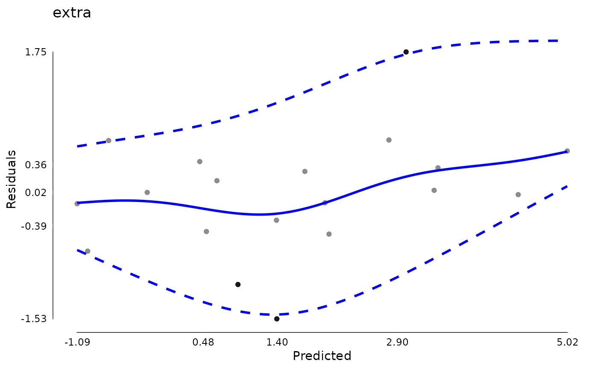

This function creates a number of diagnostics
for merMod models.
Usage
# S3 method for merMod
modelDiagnostics(
object,
ev.perc = 0.001,
robust = FALSE,
distr = "normal",
standardized = TRUE,
...
)Arguments
- object
A fitted model object, either of class merMod from the lme4 package or merModLmerTest from the lmerTest package.
- ev.perc
A real number between 0 and 1 indicating the proportion of the theoretical distribution beyond which values are considered extreme values (possible outliers). Defaults to .001.
- robust
Whether to use robust mean and standard deviation estimates for normal distribution
- distr
A character string given the assumed distribution. Passed on to
testDistribution. Defaults to “normal”.- standardized
A logical whether to use standardized residuals. Defaults to
TRUEgenerally where possible but may depend on method.- ...
Additional arguments, not currently used.
Value
A logical (is.modelDiagnostics) or
a modelDiagnostics object (list) for
as.modelDiagnostics and modelDiagnostics.
Examples
library(JWileymisc)
sleep[1,1] <- NA
m <- lme4::lmer(extra ~ group + (1 | ID), data = sleep)
md <- modelDiagnostics(m, ev.perc = .1)
md$extremeValues
#> extra ID Index EffectType
#> 1: 0.0 9 9 Residuals
#> 2: -0.1 5 15 Residuals
#> 3: 4.6 9 19 Residuals
#> 4: 3.4 6 6 Random Effect ID : (Intercept)
#> 5: 3.7 7 7 Random Effect ID : (Intercept)
#> 6: 4.4 6 16 Random Effect ID : (Intercept)
#> 7: 5.5 7 17 Random Effect ID : (Intercept)
class(md)
#> [1] "modelDiagnostics.merMod" "modelDiagnostics"
plot(md)

data(aces_daily, package = "JWileymisc")
m <- lme4::lmer(PosAff ~ STRESS + (1 + STRESS | UserID), data = aces_daily)
md <- modelDiagnostics(m, ev.perc = .1)
# gm1 <- lme4::glmer(cbind(incidence, size - incidence) ~ period + (1 | herd),
# data = lme4::cbpp, family = binomial)
# modelDiagnostics(gm1) ## should be an error
rm(m, md, sleep)